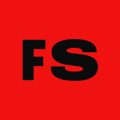
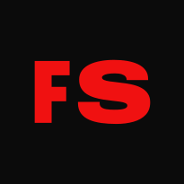

Una sola persona cubre todo el recorrido: estrategia, diseño, código y las campañas que traen clientes. Nada se pierde en un traspaso.
Una grotesca que va de condensada a expandida: ese rango es el símbolo, y el monograma lo resume en una F compacta y una S expandida. El gesto de marca es la línea: algo sin forma que se ordena hasta volverse palabra, de boceto a resultado.
Cada afirmación va con un número real al lado. +551% en ventas, Lighthouse 99, 13 proyectos con 5.0. La marca presume resultados, no adjetivos.
Federico Schwindt diseña, programa y hace crecer sitios web para negocios que miden resultados.
Dueños de pymes, e-commerce y marcas en crecimiento en EE.UU., Israel, Australia y Latinoamérica.
Tres disciplinas en una persona y prueba medible en cada proyecto.
Directo, seguro, preciso. Con humor seco. Nunca arrogante, nunca corporativo.
Resultados antes que estética. Velocidad. Honestidad con los números. Oficio.
F a 68% de ancho, S a 125%. La misma tipografía en los dos extremos de su rango.
Avatar, favicon, firma, cierre de video y cualquier espacio pequeño.


Dejar libre alrededor del logo un margen igual al ancho de la F. Tamaño mínimo: 24 px de alto en pantalla, 8 mm en impresión.
No estirar
No rotar
No recolorear
No sobre degradados
No sombras ni efectos
No bajar opacidad
El color firma. Fondos completos, bloques y acentos sobre Ink. El texto encima va en Ink.
Texto, logo y secciones oscuras.
Un solo acento. No se suman otros colores a la marca: el color de cada proyecto vive en sus capturas, no en la interfaz.
Titulares en Archivo Black con mayúscula inicial, interlineado 0.9, tracking -4.5%. Números en Archivo condensada. El énfasis es una sola palabra en cursiva serif.
Párrafos, botones y navegación. Cuerpo base 18 px, interlineado 1.5, máximo 65 caracteres por línea.
Etiquetas, métricas, fechas y código. Mayúsculas, 12-14 px, tracking +6%.
Negra y recta para lo que afirma: verbos, nombres, promesas.
Cursiva serif para la palabra que cierra la idea.
Un énfasis por titular. Las cifras van en condensada.
Dos registros. Recorte en traje negro sobre Rojo para portadas y hero. Blanco y negro con grano para momentos de trabajo y cercanía.
Mirada a cámara, luz dura lateral, sin sonrisa de stock. Nunca fondos de oficina genérica ni filtros de color.
"I rebuilt their store. Sales grew 551% in two years."
"We craft seamless digital experiences that elevate your brand."
Divisor, progreso y barra de carga. Siempre de izquierda a derecha.
Esquinas rectas en bloques e imágenes. Radio completo solo en botones y pastillas. Líneas de 2 px. Sin sombras, sin degradados.
Todos los logos son vectores con el texto convertido a trazados. Las cuatro fuentes son de licencia abierta (OFL) y se descargan gratis de Google Fonts.